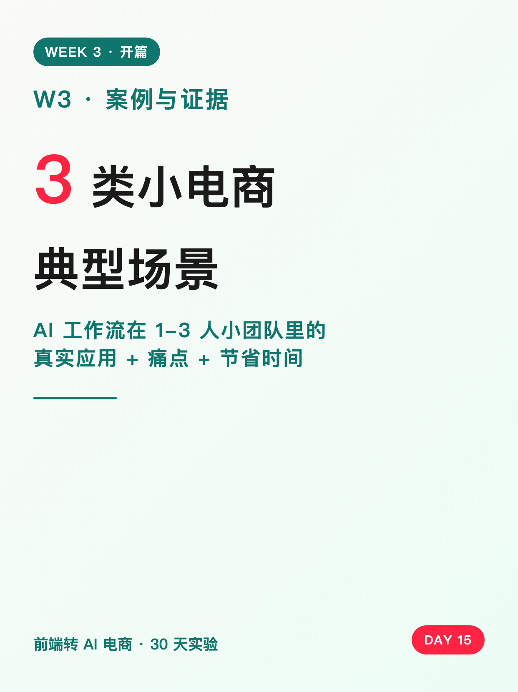
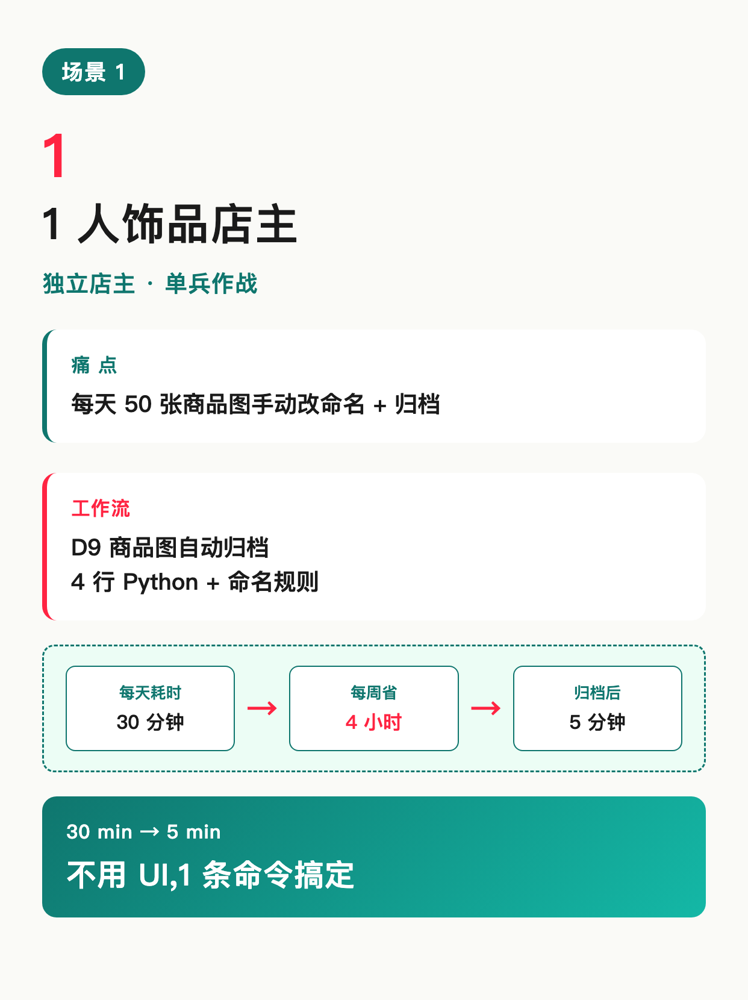
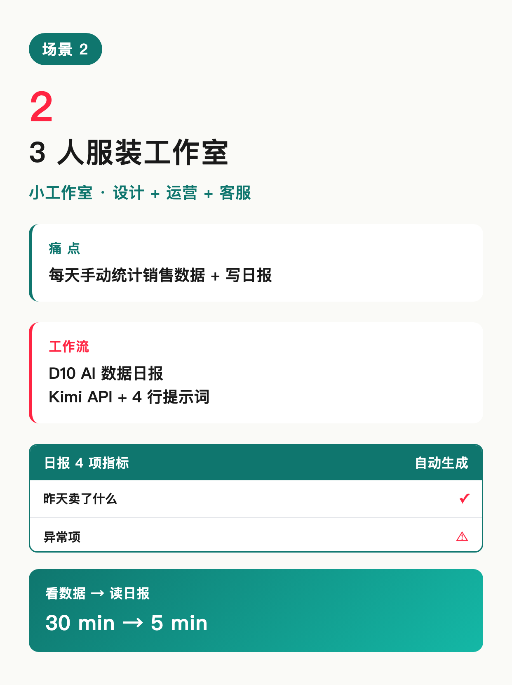
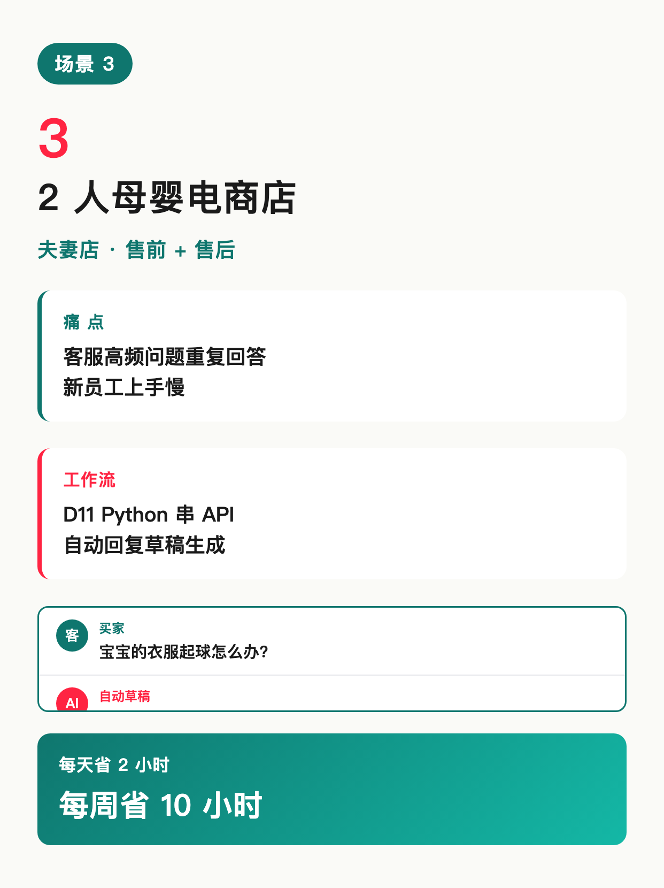
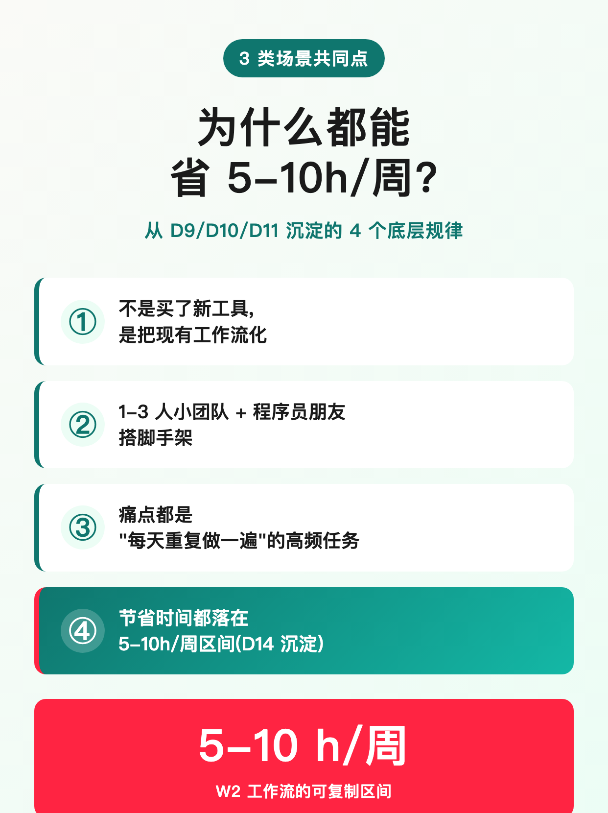
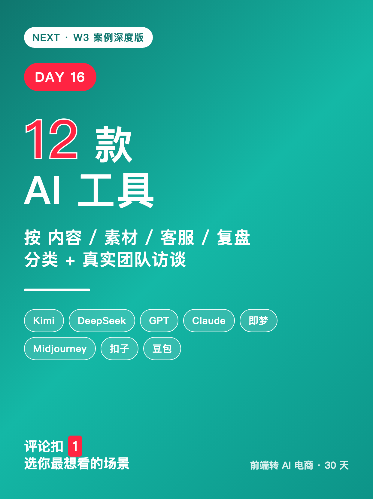

使用说明:所有内容已按发布标准预排好,发布前请用最下方 3 个复制按钮。
6 张图按顺序上传,标题"W3 开篇 · 3 类小电商典型场景"(XHS 上限 20 字 ✓)。
配图已通过 HTML+Chrome headless 截图 1242×1660 PNG 生成(中文 100% 清晰,沿用 D14 经验)。






W3 开篇 · 3 类小电商典型场景
W3 开篇。承接 D14"评论扣 1 选 W3 方向",这周连更 3 类小电商场景。 不是工具横评,是 W2 工作流在 1-3 人小团队里的应用 + 痛点 + 节省时间。 (注:以下是 3 类典型场景预告,真实团队深度访谈见 D16/D17/D18) ────── 场景 1:1 人饰品店主 ────── 痛点:每天 50 张商品图手动改命名 + 归档 工作流:D9 商品图自动归档(4 行 Python + 命名规则) 效果:从 30 分钟/天 → 5 分钟/天 ────── 场景 2:3 人服装工作室 ────── 痛点:每天手动统计销售数据 + 写日报 工作流:D10 AI 数据日报(Kimi API + 4 行提示词) 效果:从 30 分钟/天 → 5 分钟/天 ────── 场景 3:2 人母婴电商店 ────── 痛点:客服高频问题重复回答,新员工上手慢 工作流:D11 Python 串 API 自动回复草稿 效果:每天省 2 小时,每周省 10 小时 ────── 3 类场景的共同点 ────── ✅ 不是买了新工具,是把现有工作流化 ✅ 节省时间都在 5-10h/周(D14 沉淀区间) ✅ 1-3 人小团队 + 程序员朋友帮搭脚手架 ✅ 痛点都是"每天重复做一遍"的高频任务 ────── W3 接下来怎么做 ────── 如果你愿意公开你的小团队场景(脱敏后),评论留言。 D16 起会精选 3 个真实案例出深度版。 评论扣 1:你最想看哪类场景的详情? 🅰️ 1 人单兵(独立店主) 🅱️ 3-5 人小工作室 🅰️2 5-10 人小电商 关注我,看 30 天跑完我会得出什么结论 🌱
#前端转AI电商
#W3开篇
#小电商团队
#AI工作流
#提效场景
♡ 收藏
💬 评论
↗ 分享
📋 一键复制
📊 D15 数据复盘
W3 开篇定位: 承接 D14 W2 收官"评论扣 1 选 W3 方向"的承诺 → 3 类典型场景预告 → D16 起真实团队深度版
3 类典型场景: 1 人饰品店(D9 商品图)+ 3 人服装工作室(D10 数据日报)+ 2 人母婴店(D11 客服 API)—— 把 W2 工作流在 3 类典型团队里的应用列出来
数据来源: "5-10h/周"来自 D14 复盘沉淀;"30min→5min"来自 D9/D10 跑通数据;"省 2h/天"来自 D11 客服场景估算
骨架版 vs 真实版: 本篇是 3 类典型场景预告版(数字基于已有 D9-D11 工作流),真实团队脱敏案例由 D16/D17/D18 承接
互动钩子: 评论扣 1(三选一)+ 邀请留言"愿意公开团队场景"—— 把"预告版"转成"深度版选题池"
🚀 发布前 15 分钟 SOP
- 打开小红书 App → 创建笔记
- 选 6 张图(封面 1 + 内页 5),按顺序排好
- 选 3:4 竖图
- 标题:W3 开篇 · 3 类小电商典型场景
- 正文:点"复制正文"按钮粘贴
- 加 5 个标签
- 选发布时间:周一 20:00-21:00(W3 开篇 + 周一晚高峰天然高曝光)
- 发布
📈 发布后 24 小时 SOP
| 时间 | 动作 | 目标 |
|---|---|---|
| 10 分钟 | 自己评论扣 1("W3 你最想看哪类场景?+ 三选一") | 激活引导型评论区 |
| 30 分钟 | 每条评论都认真回复(尤其"愿意公开团队场景"的留言要追问 1-2 句) | 收集 D16 真实案例素材 |
| 2 小时 | 截图保存 W3 开篇数据 | W3 中段素材 |
| 6 小时 | 看一次数据(曝光/收藏/评论/场景投票分布) | 判断是否二次推 |
| 24 小时 | 统计评论里"愿意公开的团队"+ 场景投票分布,准备 D16 真实案例 | D16 深度版方向 |
🎯 Day 15 数据目标
| 指标 | 目标 | 备注 |
|---|---|---|
| 曝光 | ≥ 1500 | W3 开篇 + 周一晚高峰天然高曝光 |
| 收藏率 | ≥ 6% | 骨架预告版收藏率会低一些(没深度干货) |
| 评论 | ≥ 80 | 投票 + 邀请公开团队场景 = 双钩子 |
| 涨粉 | ≥ 100 | W3 开篇冲一波 |
| D16 钩子 | 收集 ≥ 5 个"愿意公开团队场景"的留言 | 真实案例池是 D16-D18 的命脉 |
💡 关键设计点
1. 标题 = 节点 + 数字 + 场景关键词
- "W3 开篇" = 系列节点(用户知道"这是个连载 + 进入 W3")
- "3 类小电商典型场景" = 数字冲击 + 类型暗示(预告版)
- 字数 14 字,XHS 上限 20 ✓
2. 正文 = 3 场景 + 共同点 + W3 钩子
- 3 类典型场景(每类痛点/工作流/效果,引用 D9/D10/D11)
- 3 类场景共同点(4 行绿勾,沉淀性观点)
- W3 钩子(投票三选一 + 邀请公开团队场景,把预告转成深度版选题池)
3. 骨架版定位(关键决策)
- 为什么用"典型场景"而非"真实小团队": 没有真实团队访谈素材前,典型场景基于已有 D9-D11 工作流推演,数字来自 D14 沉淀区间,不编造外部数据
- "评论邀请公开团队"是关键钩子: 用户的真实素材 → D16/D17/D18 深度版
- 数据目标调低: 收藏率从 ≥8% 调低到 ≥6%(骨架预告版收藏价值低)
4. 图文对应
- 图 01 = 封面(墨绿底 + "W3 开篇"大字 + 红色"3"数字 + 副标"3 类小电商典型场景")
- 图 02 = 场景 1:1 人饰品店商品图归档(流程图:50 张图 → 4 行脚本 → 5 分钟)
- 图 03 = 场景 2:3 人服装工作室 AI 数据日报(表格 + 警示色,4 项指标)
- 图 04 = 场景 3:2 人母婴店客服自动回复(对话气泡 + API 流程)
- 图 05 = 3 类场景共同点(4 行绿勾 + 节省时间区间)
- 图 06 = Day 16 预告(墨绿底大字"Day 16 · W3 案例深度版" + 副标"工具 × 内容 × 素材 × 客服 × 复盘")
⚠️ 注意事项
- 骨架版不是终稿—— D16/D17/D18 必须有真实团队素材,否则会失信于评论区
- 不要把"3 类典型场景"说成"3 个真实小团队"—— 副标题明确"典型场景预告版",正文括号说明"D16 起真实团队深度版"
- "5-10h/周"必须标来源—— 来自 D14 复盘沉淀,不是凭空
- "30min→5min"必须标 D9/D10—— 引用已有工作流的真实数据,不编造
- 互动钩子是"收集真实素材"—— 不只是投票,要追问"愿意公开团队场景"的具体留言
- 配图沿用 D14 经验—— HTML+Chrome headless 截图,中文 100% 清晰(避开 mmx 中文乱码)
- 正文用"我"视角而非"你"—— "以下是 3 类典型场景"而不是"你应该做"